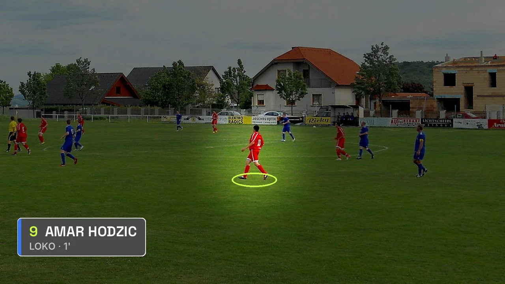

Ponovljeni snimak i reflektor na strijelcu: amaterski prenos koji izgleda kao televizija
· Kadar

Televizija je sve naučila kako izgleda gol: gol, pa gol još jednom, s imenom strijelca ispod. Amaterski prenos obično ima samo prvi dio, a gledalac koji je na sekundu skrenuo pogled zauvijek ga je propustio. Telefon sada može i drugi dio.
Ponovljeni snimak dok utakmica teče
Kad upišete gol u rezultat ili dodirnete Highlight, Kadar označi trenutak. Otvorite ponovljeni snimak i prvo ga pogledate u pregledu koji vidite samo vi. Ako ga vrijedi pokazati, pustite ga u prenos: ide u prozoru u uglu dok slika uživo teče iza njega, pa niko ne propusti nastavak igre.

Potpis kaže ko je to bio
Ispod prozora ponovljenog snimka ide potpis: broj dresa, ime, klub i minuta. Ako su sastavi u aplikaciji, igrača birate s liste. Dva dodira, a to je slika ekrana koju će napraviti strijelčeva porodica.
Svjetlo na jednom igraču
U pregledu dodirnete igrača. Telefon ga pronađe u slici i prati kroz isječak; ostatak slike se zatamni, a krug mu označi noge. Dodirnuta slika na sekundu stane da vidite ko je odabran, a novim dodirom možete ispraviti izbor.
Šta ne radi
Pošteno je reći gdje su granice.
- Reflektor prati igrača, ne loptu.
- Prati jednog igrača kojeg dodirnete, u tom jednom isječku. Ne analizira utakmicu i ne pravi taktiku ni statistiku.
- U gužvi u šesnaestercu telefon može izgubiti igrača ili preskočiti na drugog. Pomaže snimanje s višeg mjesta.
- Mogućnost je nova i na telefonu je isprobana tek kratko.
Poslije utakmice isti alati prave isječak
U studiju za isječke otvorite highlight, dodirnete igrača, popunite potpis i izvezete video. Svjetlo, krug i potpis upisani su u isječak, spreman za stranice kluba.

Gledanje ponovljenog snimka na vlastitom telefonu je besplatno. Puštanje u prenos, potpis, reflektor i studio za isječke dio su PRO paketa, a sve iz PRO paketa besplatno je do 28. februara 2027.